Bopwire — Network Topology & Decentralization
How the mesh forms, routes traffic, separates the money from the music, and scales. A companion to the technical white paper that zooms in on the network architecture. This is a technical description of how the system works — not financial advice, and no claim about the monetary value of any token; the token is the network's internal accounting and reward unit.
Abstract. Bopwire is a peer-to-peer music network that rewards artists and the peers who seed their music, not listeners. It splits cleanly into a control plane — a lightweight blockchain of song fingerprints, play proofs, and balances replicated across full nodes — and a data plane — the audio itself, which never touches a full node and instead streams directly between listeners over an encrypted swarm. This paper describes the four node roles and how they interconnect, the discovery and NAT-traversal machinery that lets a phone behind carrier-grade NAT still reach the mesh, the bitcoin-style block propagation and vote-free consensus that keep every node byte-identical, the multi-source swarm that moves the bytes, the three-party corroboration that pays seeders per delivered byte, the committed state root that turns any cross-node disagreement into an immediate block rejection, and the caching and horizontal-scaling levers that let the system grow from one VPS to many. A closing section lays out the security model end to end.
Contents
- Introduction & design goals
- Node roles & topology
- Peer discovery & bootstrap
- NAT traversal & traffic routing
- The ledger — block production, propagation & consensus
- Content distribution — the swarm
- Incentive layer — routing the rewards
- Deterministic discovery & cross-node corroboration
- How it scales
- Security model
- Conclusion
1. Introduction & design goals
Bopwire is a peer-to-peer music network with an unusual economic hook: it pays artists and the peers who seed their music, and specifically over-rewards artists with fewer than 10,000 plays, while listeners earn nothing for merely listening. Getting that incentive right — without a central server that could quietly censor, deplatform, or skim — is the reason the system is built the way it is.
The architecture follows four principles:
- Separate the money from the music. A song's identity, ownership, play counts, and reward balances live on a replicated ledger (the control plane). The audio bytes never touch that ledger — they move directly between listeners over an encrypted swarm (the data plane). A full node can prove who is owed what without ever holding a copyrighted byte.
- Determinism over trust. Every honest full node re-derives the same chain state, the same play weights, and even the same curated Discover feed from the same inputs. Agreement needs no voting and no signing authority — nodes cross-check by comparing hashes.
- Reach every peer. Most listeners are phones behind carrier-grade NAT. The network prefers direct connections but falls back to relaying through a public mini-node so a firewalled peer is never unreachable.
- Scale by adding relays, not by centralizing. Throughput grows by adding stateless mini-nodes and cache-only gateways; the consensus core has no single writer to become a bottleneck.
The core split. If you remember one thing: fingerprints, metadata, play proofs, and balances are on-chain and replicated; audio is off-chain and peer-to-peer. Everything else in this paper follows from that division.
2. Node roles & topology
Four kinds of participant make up the mesh, each doing one job well. A single device can play several roles at once — a phone is a listener, a seeder, and a wallet simultaneously.
| Role | Runs | Holds |
|---|---|---|
| Full node | chain + verb API (rats_api), block producer (CandidateManager), block propagator, deep auditor, reward sweeper, deterministic curator | the full ledger in LevelDB — never audio |
| Mini-node (VPS relay) | relay.forward, chat, the delivery broker, load reporting | nothing durable — a stateless relay |
| Web gateway | an HTTPS/JSON facade behind Caddy that bridges browsers (which can't speak the P2P protocol) to the mesh, and streams audio pulled from the swarm | short-lived caches only |
| Player | the app: local fingerprinting, streaming, seeding, wallet | the user's own audio files |
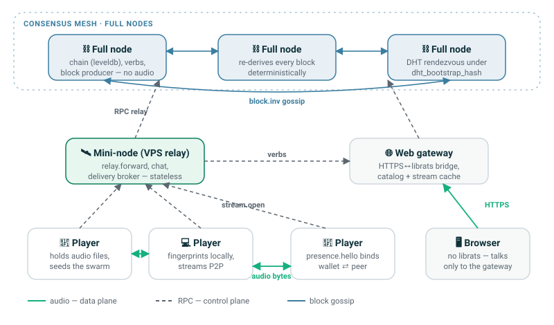
Full nodes form a flat mesh — there is no leader and no hierarchy among them. They discover each other through a distributed hash table (DHT) and gossip blocks peer-to-peer. Mini-nodes and gateways are edge infrastructure: they help players reach the mesh and help browsers reach the swarm, but they hold no authority. Players are the leaves — and, crucially, they are also the only place the audio lives.
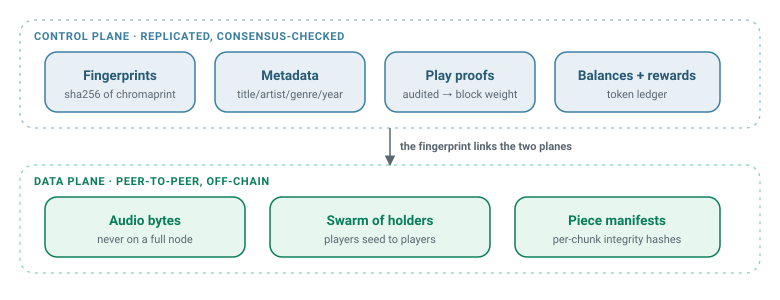
Why full nodes hold no audio. Because a full node never stores or serves copyrighted bytes, it is cheap to run, legally defensible, and impossible to turn into a honeypot. It only ever sees fingerprints and metadata — enough to run the economy, not enough to be the pirate.
3. Peer discovery & bootstrap
The transport is librats — a compact peer-to-peer stack providing a Kademlia-style DHT, gossip, NAT traversal (ICE), and Noise-encrypted TCP links. Every hop on the network is encrypted end to end; there is no plaintext on the wire.
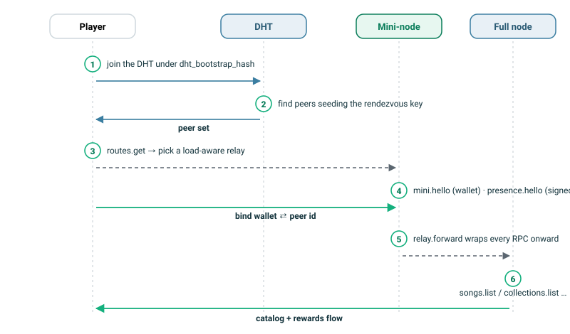
A cold player joins the mesh in six steps:
- DHT join. The player announces and searches under a well-known rendezvous key (
dht_bootstrap_hash) to find live infrastructure. - Route selection.
routes.getreturns reachable relays; the player prefers the least-loaded mini-node (see §9). - Identity binding.
mini.helloannounces the player's wallet to the relay, and a periodically re-signedpresence.hellobinds wallet ⇄ live peer id so the network knows which songs a currently-online peer can actually serve. - Relayed verbs. Once a relay is chosen, every request —
songs.list,collections.list,wallet.balance, play sessions — is wrapped inrelay.forwardand carried to a full node.
Signed presence, not trusted presence. Discovery trusts only the timestamp of a wallet's last valid signed presence beacon. A peer is discoverable for a bounded window after each beacon (the app re-signs every ~30 s), and a replayed beacon is rejected by a skew check plus per-wallet monotonicity. A departed peer simply falls out of discovery — no unauthenticated "peer offline" message can evict it early, and no captured beacon can keep it alive.
4. NAT traversal & traffic routing
The network is direct-first, relay-when-necessary. Two peers try to connect straight to each other; only if NAT or a firewall blocks that path does traffic detour through a public mini-node.
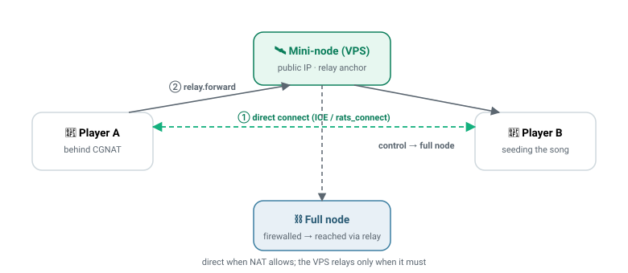
A player resolves a target peer's public address with player.locate and reflects its own address with stun.observe. It then attempts a direct rats_connect. If the direct dial fails — the common case for two phones on cellular — the request is wrapped in relay.forward and the mini-node passes it along. The relay anchor is always a mini-node (never another full node or player), because only mini-nodes run the relay.forward handler.
The relay is a courier, not a custodian. Even when the mini-node relays audio, it is paid per delivered byte only when both the seeder and the listener sign for that delivery (§7). It cannot forge traffic it didn't carry, and because it holds nothing durable, losing a mini-node costs the network capacity — never data.
5. The ledger — block production, propagation & consensus
The control plane is a purpose-built blockchain. A block bundles new song registrations (a SongSection with its fingerprint and metadata), play proofs, and transactions — token transfers, username claims, relay-reward mints, and moderation actions.
Block propagation
Full nodes distribute blocks bitcoin-style. On connect, two nodes exchange tips with block.hello; a node that is behind sends a block.getblocks locator, receives a block.inv inventory of hashes, requests the ones it lacks with block.getdata, and receives full blocks as block.data. A freshly mined block is pushed to the mesh as an unsolicited block.inv. Because inventory carries hashes rather than full blocks, a node can pull missing blocks from several peers at once.
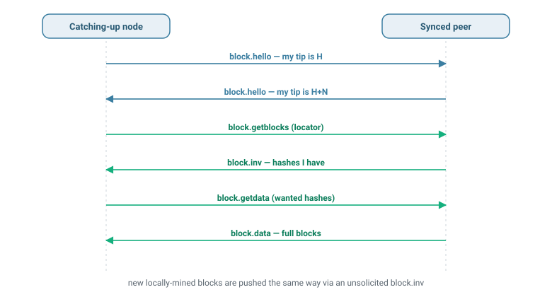
Vote-free consensus
There is no candidate voting and no confirmation gossip ("Model 1"). Block production is simply build → validate → connect → announce, and every node re-derives validity deterministically on receipt. When two valid branches exist, fork choice picks the one with the greater cumulative audited-play weight (tip_weight); a node that sees a heavier branch calls reorg_to_branch, which rewinds and re-derives state along the new branch — and only keeps it if the result is genuinely heavier.
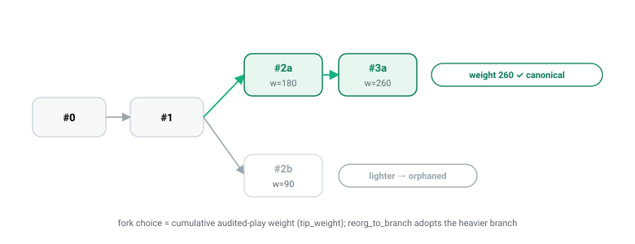
Determinism is the safety net. Every node keeps derived state (balances, play counts, artist/genre indexes) that it can throw away and rebuild from the raw blocks at any time. That is what makes a reorg safe: the node replays the winning branch and arrives at the exact same state every other honest node computes.
The committed state root
Determinism only helps if divergence is actually caught. Every block header carries a state root — an order-independent lattice hash over the entire ledger state (balances, play counts, the song index, the moderator set) as it stands after the block applies. The producer computes it and stamps it into the header; every other node re-applies the same block against its own state, recomputes the hash, and rejects the block if the two differ. A balance bug, a double-spent play, a reordered mint — anything that would quietly drift two nodes apart — becomes an immediate, deterministic rejection at the header gate instead of a slow silent fork. The hash is additive, so a node tracks it incrementally as it applies each block rather than rescanning the whole database, and a reorg re-derives and re-checks the same root along the new branch. The block's identity also binds the complete song body — payout address, royalty splits, audio format — and a hard per-block size and transaction-count cap bounds what any single block can carry. The security model (§10) walks through what these guarantees buy.
Keeping content honest
Because audio is off-chain, a producer could in principle register one fingerprint but seed different bytes. A background deep auditor re-derives the chromaprint of sampled content and, on a mismatch, gossips a signed forgery report. A song is dropped only once the node re-audits it as forged locally or K independent reporters agree — so a single malicious reporter cannot censor, and a single forger cannot hide.
6. Content distribution — the swarm
Audio moves entirely peer-to-peer. A player fingerprints its local files (Chromaprint), and announces to the network with fingerprint.submit that it holds the bytes for a given content hash. Two indexes track who has what: an in-memory SwarmIndex of live holders, and a wallet-keyed library store whose membership is replicated by signed library.delta gossip. A song appears in songs.list only when a currently-online, presence-bound wallet is actually holding it — so the browse surface is strictly "streamable right now."
Opening a stream
To play song X, a listener sends stream.open(X) to a full node, which replies with the set of online holders plus a per-piece manifest (integrity hashes for every chunk). The listener then pulls chunks — directly from seeders when it can reach them, or relayed through a mini-node when it can't. First-byte latency is one piece fetch, not a whole-file download, and each chunk is verified against the manifest as it lands.
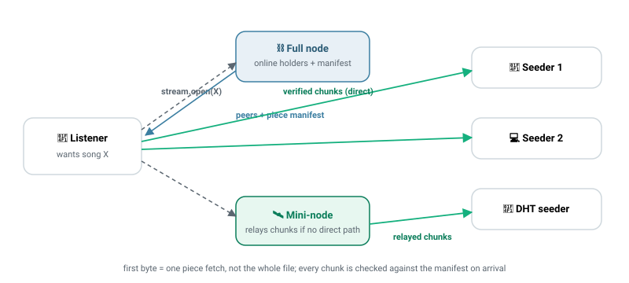
Multi-source piece transfer
Downloads use a BitTorrent-style engine. The file is split into fixed-size pieces fetched in parallel from many sources at once — seeders named by the full node, and extra seeders discovered independently through the DHT (SwarmRegistry), so a song stays fetchable even when the VPS-mediated swarm is empty. Up to 8 workers issue wide multi-piece requests; any piece that fails its manifest hash is discarded and refetched from a different peer.
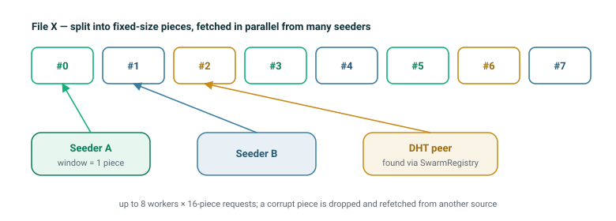
Membership vs availability. A curated collection or an album may list a song whose seeders are momentarily offline. The network keeps it visible but dims it — membership is a deterministic on-chain fact, while availability is a live overlay. Dropping it would make different nodes disagree; dimming it keeps them identical.
7. Incentive layer — routing the rewards
A play is a small, verified economic event. The listener's app runs an honest session — session.start, periodic session.heartbeat, session.complete — and the full node validates the timeline server-side before minting anything. The mint fans out to the parties who created value:
- Artist / discoverer — over-rewarded while the song is under
FULL_REWARD_THRESHOLD(10,000 plays), which is the whole point of the network. - Seeder — the peer that actually served the bytes for this play.
- Mini-node — the relay, when one carried the delivery.
Listeners earn nothing for listening on the web; the native app is where a listener can earn by seeding.
Every mint is on-chain. A validated play does not just nudge a local balance — it settles as a mint transaction inside a block, so the reward is durable, replicated, and independently auditable by every node rather than living only on the one that happened to see the play. At scale a node folds the many plays it validated in an interval into a single settlement mint that carries their play proofs and pays every recipient at once — keeping the per-play cost low while each proof stays individually verifiable. Crucially, a node may only mint after it has authorized itself on-chain (a one-time NodeAuthTx); an unauthorized node's mints are simply not accepted. That gate, plus the per-device attestation that bounds how fast any one device can generate plays, is what makes faking plays worthless (§10).
Paying the relay for real bytes only
The tricky part is paying a relay for work it genuinely did, without letting it invent traffic. Bopwire solves this with a three-party corroboration. At stream.open the broker mini-node records a single-use pending-delivery row. The mini then reports the bytes it relayed (signed), the listener reports the bytes it received (signed), and the node credits the minimum of the two — you cannot be paid for bytes the listener didn't confirm. The row is single-use, so a replayed report earns nothing.
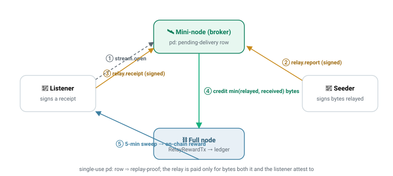
Credited bytes accumulate per relay and are swept into a signed on-chain RelayRewardTx on a five-minute cycle, with a per-transaction cap so a burst can't emit an unmineable transaction (the remainder carries forward). Per-device attestation bounds how fast any one device can mint, so faking plays has no payoff.
Why listeners can't farm the web player. A web play mints for the artist, seeder, and relay — never the browser. There is nothing to farm by faking web plays, which is why the web path needs no heavy anti-abuse machinery; the real controls live on the native, earning path.
8. Deterministic discovery & cross-node corroboration
The Discover feed — Rising, Top 50, New Releases, per-genre and per-year rows — is not served from a central recommender. Each full node computes it deterministically from on-chain data once per epoch. Every honest node at the same epoch produces a byte-identical result.
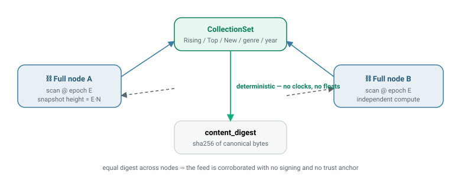
The generator uses on-chain fields only (play counts, first-play block, genre, year), sorts with content-hash byte-order tie-breaks, and snapshots at a buried epoch boundary rather than the live tip — so a shallow reorg near the tip can't churn the feed. It serializes the result canonically into a content_digest (a sha256). A client can fetch the feed from two independent nodes and compare epoch, snapshot hash, and digest: if they match, the feed is corroborated with no signing and no trust anchor. The determinism is deliberate — any use of live wall clocks, floating-point sort keys, or hash-map iteration order would break byte-identity, so none are used.
Cross-checking replaces trust. The same idea recurs throughout Bopwire: rather than trust a signer, a client asks several nodes for the same deterministic answer and compares hashes. Agreement is the proof.
9. How it scales
Bopwire scales along three independent axes, none of which centralizes control.
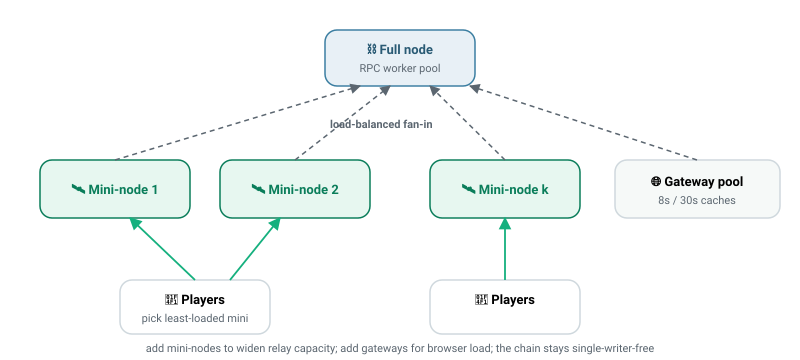
- Relay capacity → add mini-nodes. Mini-nodes are stateless, so you can run many. Players pick the least-loaded one via load reporting, spreading fan-in. A full node protects itself with a bounded RPC worker pool that sheds the oldest queued request under flood, an on-connect handshake debounce, and a cached anti-entropy summary so a reconnect storm can't amplify into full-library walks.
- Browser capacity → add gateways. Gateways are pure caches in front of the mesh: a short-TTL catalog cache, a per-epoch collections cache, and a reused open-stream store that de-dupes a browser's range requests. Gateways hold no authority, so they scale like any stateless web tier.
- Ledger throughput → determinism, not sharding. Because every node re-derives state and there is no global writer lock or voting round, adding full nodes adds resilience and read capacity without a coordination bottleneck. Expensive jobs — curation, deep audit, reward sweeps — run off the hot path on their own cadences. Per-play rewards are folded into settlement mints so a busy interval costs a handful of transactions rather than thousands, and the per-block size and count caps make every block a bounded, predictable unit of work that a node can validate in constant memory.
| Pressure | Lever | Mechanism |
|---|---|---|
| Relay fan-in | more mini-nodes | stateless relays + load-aware selection |
| RPC flood | backpressure | bounded worker queue, drop-oldest |
| Reconnect storms | debounce + cache | per-device handshake debounce, cached db2 summary |
| Browser traffic | more gateways | TTL catalog/collections caches, shared stream store |
| Catalog growth | server-side paging | filtered/sorted slices — the full list never ships |
| Discover cost | epoch batching | O(N) scan once per epoch, off the hot path |
The honest bottleneck. Today a small deployment leans on a single VPS relay for fan-in. That is a capacity ceiling, not a trust or safety one — the design already supports many mini-nodes and gateways, so scaling out is an operational step, not an architectural change.
10. Security model
Bopwire has no trusted server to defend and no admin key that, if stolen, would own the network. Its security comes instead from two properties that run through every layer: determinism — every honest node computes the same answer from the same inputs — and cryptographic binding — every claim is tied to a key or a hash that cannot be forged after the fact. This section collects the guarantees the rest of the paper builds on and names what each one defends against.
Byte-identical state — the committed state root
The strongest guarantee is the one introduced in §5: every block header commits to a state root, an order-independent hash of the entire ledger state after the block applies. The producer stamps it; every validator re-derives it independently and rejects the block on any mismatch.
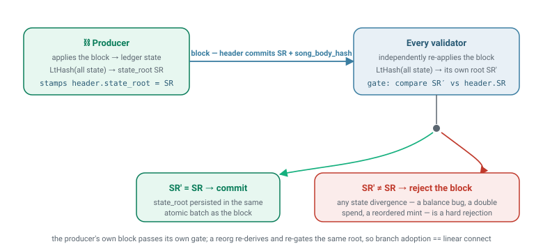
The payoff is that a whole class of consensus bugs — a mint credited twice, a transfer that overdraws, a play counted out of order, an index that drifts — can no longer split the network quietly. The first node to compute a different state simply refuses the block, and because a producer's own block must pass its own gate, a node cannot even mine state its peers would reject. Branch adoption and linear replay reach the same root, so there is exactly one canonical state at every height.
Tamper-proof blocks
Because payouts and identities are valuable, a block must be immutable in transit. Three rules enforce that:
- Full-body binding. A block's identity commits to its complete song body — the artist's payout address, the royalty splits, the audio format — not just the header fields. A relaying peer cannot rewrite who a song pays and pass the block off as the same one; any edit changes its hash and is rejected. This closes off in-flight royalty redirection.
- Bounded blocks. A hard per-block size and transaction-count cap is a consensus rule, checked on every block on receipt and on replay. No peer can hand a node an over-stuffed block to exhaust its memory or wedge its pipeline, and a per-sender cap keeps one funded account from monopolizing a block.
- Pinned format. The block version is fixed and validated, so a peer cannot downgrade a block to an older layout to slip past a newer rule.
Sybil resistance — earning is gated, not free
Producing blocks is permissionless, but minting rewards is not. A node must publish a one-time on-chain authorization (a NodeAuthTx) before any mint it makes will be accepted, and each earning play carries a hardware-derived device attestation that bounds how fast a single device can generate plays. Spinning up thousands of fake identities buys nothing, because the reward rate is tied to scarce hardware, not to the number of keys. The network's origin is a single founder self-grant with no premine — the genesis block creates zero tokens — and that founder address can be pinned into the consensus rules so the chain can never be silently re-bootstrapped under a different owner.
Honest plays and honest rewards
A play only mints if the full node validates the session server-side — a real timeline of signed heartbeats, at least half the track actually listened, plausible heartbeat density — and each play proof is single-use: a persisted marker rejects a resubmitted or replayed proof even across a node restart. Relay pay is the three-party corroboration of §7: the broker records a single-use delivery row, the mini-node and the listener each sign the bytes they moved, and the node credits only the minimum of the two, so neither a lying relay nor a lying listener can inflate a payout. All minting sits under a global supply cap, and a burn on high-play songs keeps issuance bounded.
Honest content
Because the audio lives off-chain, a producer could register one fingerprint but seed different bytes. A background deep auditor re-derives the fingerprint of sampled content and gossips a signed forgery report on a mismatch; a song is dropped only when the node re-audits it as forged itself, or enough independent reporters agree — so one malicious reporter cannot censor and one forger cannot hide. The fingerprint similarity test runs in fixed-point integer math rather than floating point, precisely so every node — whatever its CPU or compiler — reaches the same accept/reject verdict and the state root stays byte-identical.
Keys, escrow, and moderation
Wallets are non-custodial: a peer's network identity and its wallet are one secp256k1 key that never leaves the device, and the network only ever sees signatures and addresses. Moderation is not an admin backdoor — hide, unhide, label, and escrow-release actions are signed envelopes applied by the same deterministic rules on every node, and escrow routing (paying a song's revenue into a record-label split) is itself on-chain state that the committed state root binds. DMCA and KYC submissions are encrypted to a shared moderation key, so review is possible without exposing a submitter's data to every relay that carries it.
Hardened adversarially. The consensus core — the state root, block binding, the reorg and rebuild paths, the mint and settlement logic — was put through a multi-agent adversarial audit that hunted specifically for ways two honest nodes could diverge or a block could be forged, and every fix was re-checked for regressions before shipping. Security here is a property the code is tested against, not a claim in a document.
11. Conclusion
Bopwire's topology is a deliberate division of labor: a replicated, audio-free ledger that runs the economy; a peer-to-peer swarm that moves the music; a thin layer of stateless relays and caches that make both reachable from a phone or a browser. Decentralization is enforced not by consensus theater but by determinism and cross-checking — every honest node computes the same chain state, the same reward math, and the same Discover feed, and clients confirm by comparing hashes rather than trusting a signer.
Traffic routes direct-first and relays only when NAT forces it; rewards route to the artists and seeders who create value, proven by three-party signatures rather than asserted by a server; and the whole system scales outward by adding stateless edges, because the core was designed never to need a central one.
For the deeper economics and governance that sit on top of this topology, see the main technical white paper.